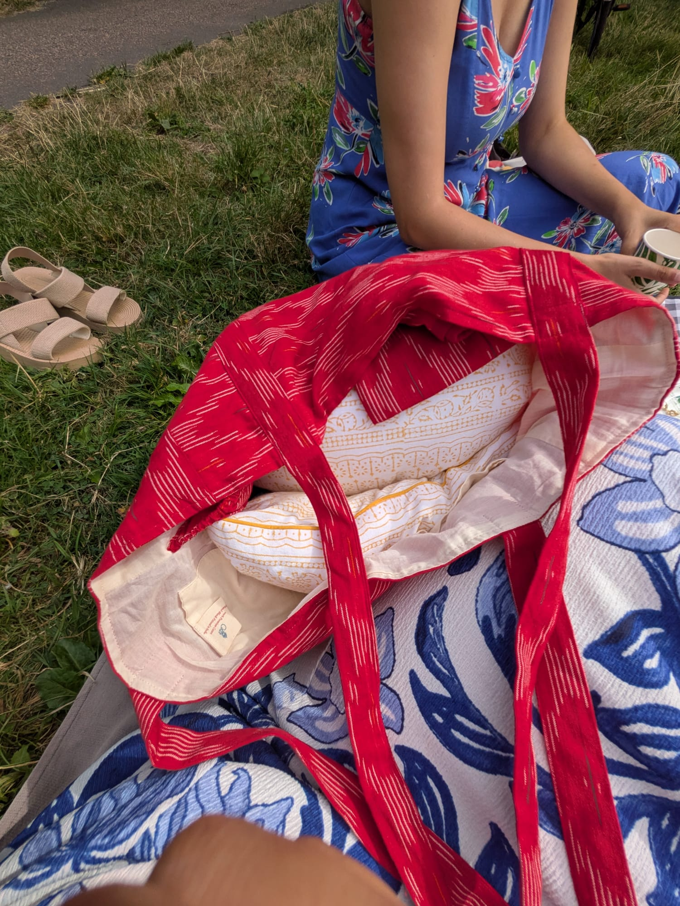
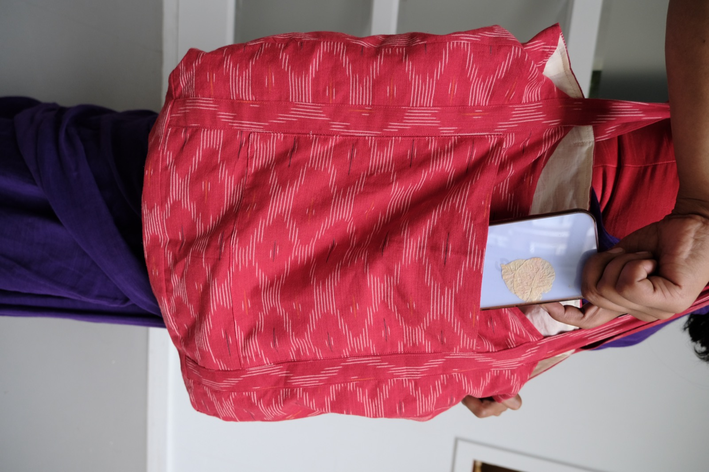
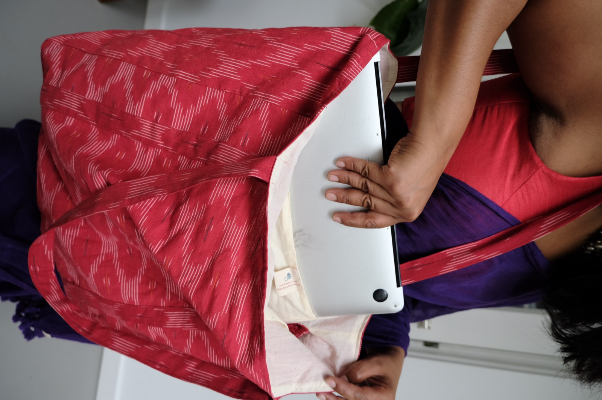
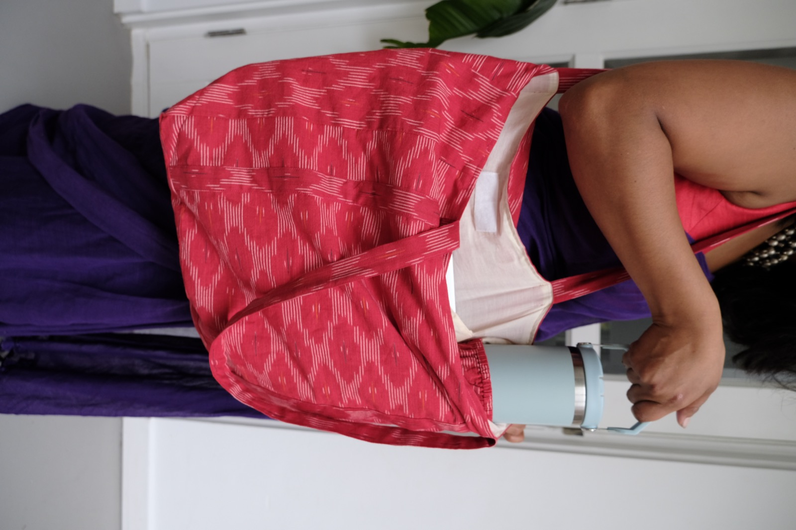
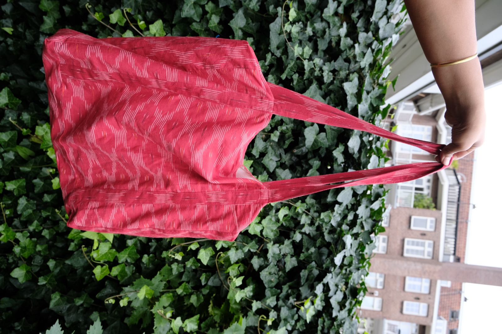

See it in use
Everyday Tote Bag
Ikat woven · 100% organic cotton

First things firstBig enough for a picnic cushion. Everything else fits easily.

Feature 1A deep front pocket — phone, keys, everything, right where you can reach it.

Feature 2Now, inside — a space just for your laptop.

Feature 3No tiny pockets here — everything inside is XL.
Feature 4Room for a large bottle. Even a bottle of wine.
Feature 5One tap of velcro — open and go.

ghar.nlThe Everyday Tote Bag